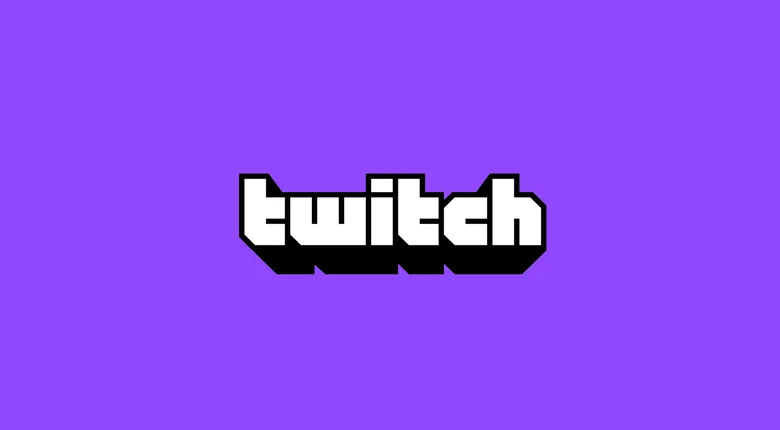

Os Principais Projetos 20Cafés
O nosso canal YouTube: @20Cafés por dia
Principais criadores de conteúdo e mantenedores:
Eduardo, Henrique
Sobre este projeto:
Este é o principal foco do grande projeto 20Cafés/dia. Um canal com vídeos, reviews, podcasts e notícias dos teus temas
favoritos, feitos por uma equipa que tenta a cada anovo vídeo se tornar o mais profissional possível.
Tecnologia, Jogos, Gameplays, Reviews, Notícias de Tech e Gaming são coisas que poderás esperar aqui.
Infelizmente falta muito conteúdo nos canais de tecnologia portugueses. Falta hardware, PCs, builds, setups, eventos com a comunidade.
Vamos tentar remediar isso, juntos! Subscreve já e partilha para nos ajudares a crescer! Links no final da página.

O nosso Twitch: @20cafespordia
Principais criadores de conteúdo e mantenedores:
Eduardo, Henrique
Sobre este projeto:
Esta é a segunda rede onde transmitimos e comunicamos com a nossa comunidade, e onde colocamos conteúdo, após o YouTube. É onde
fazemos diretos e interagimos diretamente com a comunidade, jogamos juntos e analisamos/discutimos notícias e ideias, e onde pensamos
fazer streams de unboxings em direto, build de pcs em direto, entre muitas outras coisas. Se ainda não nos segues no Twitch, devias!
Vai já nos seguir e não percas nada! Links no final da página.
A comunidade Discord
Principais mantenedores:
Eduardo, Henrique, André
Sobre este projeto:
Este é o principal foco do grande projeto 20Cafés/dia. Um canal com vídeos, reviews, podcasts e notícias dos teus temas
favoritos, feitos por uma equipa que tenta a cada anovo vídeo se tornar o mais profissional possível.
Tecnologia, Jogos, Gameplays, Reviews, Notícias de Tech e Gaming são coisas que poderás esperar aqui.
Infelizmente falta muito conteúdo nos canais de tecnologia portugueses. Falta hardware, PCs, builds, setups, eventos com a comunidade.
Vamos tentar remediar isso, juntos! Subscreve já e partilha para nos ajudares a crescer! Links no final da página.
Jogo Oficial 20Cafés/dia
Principais desenvolvedores:
Henrique, Diogo Almeida (da comunidade, obrigado!)
Sobre este projeto:
Estamos de volta da criação de um jogo completamente feito por nós e pela nossa comunidade!
Será dark-fantasy RPG gerado aleatóriamente muito focado em
história e com bastantes diálogos e opções múltiplas que te irão
desafiar e decidir a tua própria história! Junta-te ao nosso Discord
para saberes mais, e além disso, podes de qualquer forma possível
ajudar-nos a desenvolver ou dar ideias/sugestões!
3D Modeling & Printing
Principal Criador:
Henrique
Sobre este projeto:
O Henrique com a sua impressora 3D, tem tratado de criar coisas incríveis da forma que mais lhe é possível,
e as suas criações mais recentes são as moedas 20Cafés!
São to tamanho (e quase o mesmo peso) de fichas de póker, nesta foto ainda não estão acabadas mas estarão muito
melhores no final, e serão pintadas e com um porta-chaves incluído. Iremos oferecer algumas e vender outras por preços
extremamente baixos (por volta de 1-2€) por isso fica atento!
Dá-nos as tuas sugestões e ideias no nosso Discord!
A enorme comunidade em si: 20Cafés/dia!
Principais Mantenedores:
Eduardo, Henrique, André
Sobre o projeto:
Este é e sempre será sem dúvida o nosso maior projeto, e no qual mais tempo investimos. Esperamos um dia ser a
melhor comunidade de tecnologia e gaming portuguesa, e temos o sonho de ser grandes YouTubers e Streamers dos temas que
mais adoras. Tens sugestões, ideias, opiniões, críticas? É tudo bem vindo, entra no nosso Discord e explica-nos o que sentes
que seria uma grande ideia para o 20Cafés/dia!
Estamos sempre abertos a novos membros, e a ideias e ajudas (seja com ideias, conteúdo ou até produtos emprestados para review!) para vídeos, streams
e eventos com a comunidade, pois é esta que nos torna quem somos.